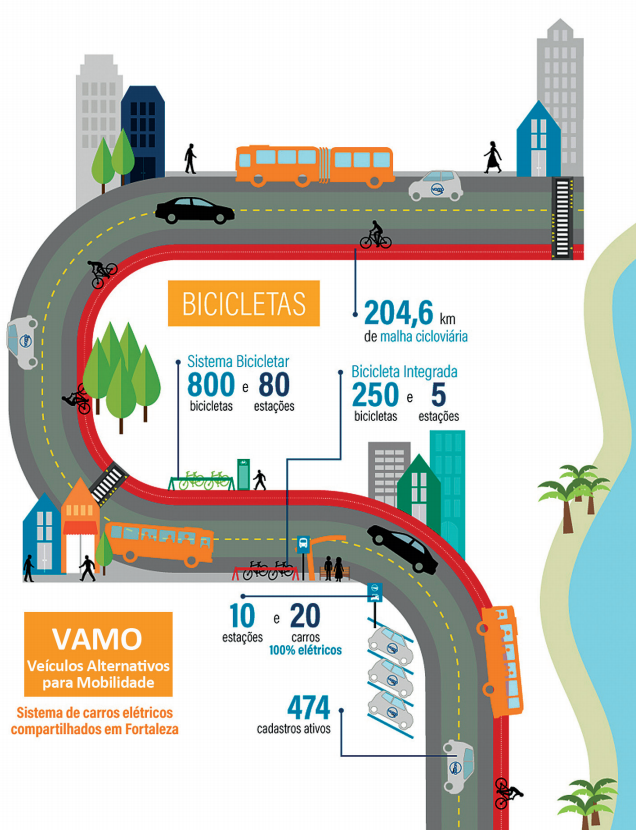

As inovações sociais em Design, assim como todos os processos de inovação, emergem, amadurecem e se difundem em três fases: de ideias novas passam a soluções maduras e a soluções implementadas. Como exemplo de protótipo de solução feito por uma comunidade criativa, pode-se citar o Workshop para a reparação de utensílios, em que pessoas levam antigos utensílios para serem renovados e doados a novos proprietários. Tais iniciativas abrem inúmeras possibilidades, mas é cedo para saber se tais invenções poderão funcionar e continuar operando ao longo do tempo. Já como ilustrativos de solução madura, citam-se os purchasing groups, grupos de compra em que pessoas se reúnem, muitas vezes organizadas por meio da internet, e compram comida orgânica e eticamente produzida diretamente dos produtores, apoiando-os economicamente. Considerando-se o sucesso conquistado, pode-se tomar tais exemplos como estágios mais maduros de inovação social. Por fim, existem as soluções implementadas por organizações colaborativas que são sustentadas por sistemas de produtos, serviços e programas de comunicação especificamente projetados. Um exemplo é o car sharing, proposta em que um grupo de residentes de determinada área se propõe a compartilhar uma frota de carros, utilizados e pagos apenas quando requeridos.
MANZINI, E. Design para inovação social e sustentabilidade: comunidades criativas, organizações colaborativas e novas redes projetuais. Rio de Janeiro: E-papers, 2008, p. 79-80 (adaptado).
O projeto VAMO, desenvolvido pela Secretaria Municipal de Conservação e Serviços Públicos (SCSP), de uma grande cidade brasileira, por meio do Plano de Ações Imediatas de Transporte e Trânsito (PAITT) e em parceria com uma empresa de planos de saúde, e um grupo focado em soluções de mobilidade urbana, é pioneiro no Brasil. Iniciado em 2016, o projeto trata da implantação pela gestão municipal do primeiro sistema público de carros elétricos compartilhados do país. Nesse projeto, desenvolvem-se alternativas de locomoção por meio de estações que oferecem aos cidadãos veículos 100% elétricos, que não produzem gases de efeito estufa e não emitem poluição sonora. Dessa forma, o meio ambiente é beneficiado, assim como já acontece em sistemas semelhantes desenvolvidos em outros países.
Disponível em: https://www.fortaleza.ce.gov.br/noticias/tag/VAMO%20Fortaleza. Acesso em: 5 set. 2017 (adaptado).
Disponível em: http://wricidades.org/noticia/fortaleza-no-caminho-da-mobilidade-sustentavel-iniciativas-beneficiam-moradores-eotimizam-integracao-modal. Acesso em: 5 set. 2018 (adaptado).
Com base nos textos apresentados bem como a importância do papel do designer na busca da inovação social voltada para a sustentabilidade ambiental, avalie as afirmações a seguir.